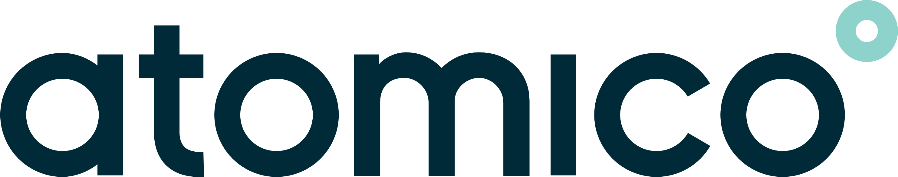

ニュースルーム
CodeRabbit の最新情報
Business Wire
CodeRabbit、15億ドル評価で1億4,300万ドルを調達し Agentic Change Management を発表
CodeRabbit は、15億ドルの評価額で1億4,300万ドルのシリーズC資金調達を実施しました。このラウンドは Atomico と Smash Capital が共同で主導し、新規投資家の BMW i Ventures、Datadog、Hirtle Callaghan、SineWave Ventures、Scenic Management、既存投資家の CRV、Scale Venture Partners、Flex Capital、Pelion Venture Partners、Harmony Partners、Engineering Capital が参加しました。
記事を読むYouTube

CodeRabbit、シリーズCと Agentic Change Management の背景を紹介
CodeRabbit の最新ニュースと、AI エージェントで開発するチームにとって Agentic Change Management が意味することをご覧ください。
記事を読むAtomico

CodeRabbit への投資: agentic software development のコントロールレイヤーを構築する
Atomico は、CodeRabbit のシリーズCを共同主導した理由と、AI エージェントが開発を変える中で Agentic Change Management がソフトウェア変更の管理を支援することを紹介しました。
記事を読むReuters
AI コードレビュープラットフォーム CodeRabbit、最新ラウンドで15億ドル評価に
Reuters は、AI コードレビューへの投資家の関心が高まる中で、CodeRabbit のシリーズC資金調達と15億ドルの評価額を取り上げました。
記事を読むAxios

コードレビュースタートアップ CodeRabbit、15億ドル評価に到達
Axios Pro は、CodeRabbit の15億ドルの評価額と、同社の売上が前年比5倍以上に成長したことを取り上げました。
記事を読むSiliconANGLE

CodeRabbit、AI 生成コードの急増に対応するため1億4,300万ドルを調達
SiliconANGLE は、CodeRabbit の1億4,300万ドルのシリーズCと、AI 生成コードの増加に対応するチーム向けの Agentic Change Management の発表を取り上げました。
記事を読むBloomberg
NVIDIA が支援する CodeRabbit、資金調達ラウンドで15億ドル評価に
Bloomberg は、CodeRabbit の新たな資金調達ラウンドを報じ、15億ドルの評価額と AI 支援ソフトウェア開発をめぐる勢いに注目しました。
記事を読むInfoWorld

CodeRabbit、Agentic Change Management で AI 生成コード過多に対応
InfoWorld は、CodeRabbit の Agentic Change Management の発表と、トリアージ、変更影響分析、セキュリティに関する新機能を取り上げました。
記事を読むSD Times

CodeRabbit、Agentic Change Management を発表
SD Times は、ソフトウェア変更を管理し理解するためのコントロールレイヤーとして、CodeRabbit の Agentic Change Management の発表を取り上げました。
記事を読むThe New Stack

「Issue tracking is dead」プルリクエストはいかに SDLC の最後のボトルネックになったか
The New Stack は、AI エージェントが人間のチームによる計画と優先順位付けの速度を上回る中で、CodeRabbit の Agentic Change Management がコードレビューを再定義することを取り上げました。
記事を読むCodeRabbit

CodeRabbit、Claude Marketplace に参加
Anthropic のお客様は、既存の Anthropic 利用契約を CodeRabbit に適用でき、調達と AI 関連支出を一本化できます。
記事を読むBusiness Wire
CodeRabbit、チームの「第二の頭脳」となる Slack Agent を発表
CodeRabbit のコンテキストエンジンを Slack に拡張し、ソフトウェア開発ライフサイクル全体に共有コンテキスト、記憶、コラボレーション、ガバナンスをもたらします。
記事を読むBusiness Wire
CodeRabbit、Matthew Mulqueen を最高収益責任者に任命
エンタープライズ導入の拡大に伴い、Mulqueen がグローバル市場戦略、営業、カスタマーサクセスを統括します。
記事を読むNVIDIA Newsroom

NVIDIA、次世代のエージェント型・フィジカル・ヘルスケア AI に向けオープンモデル群を拡充
NVIDIA は、高度なエージェント型アプリケーションに Nemotron モデルを導入する企業の一社として CodeRabbit を紹介しました。
記事を読むCodeRabbit

CodeRabbit、初の独立系 AI コードレビューベンチマークで首位
約30万件のプルリクエストにおける開発者の行動を基にした Martian の独立評価で、CodeRabbit がオンライン F1 スコア第1位を獲得しました。
記事を読むEvil Martians

Harjot Gill：日本での口コミ拡大から6,000万ドルのシリーズBまで
CodeRabbit 共同創業者兼 CEO の Harjot Gill が、AI コードレビュー、オープンソース、企業づくり、日本での初期成長について語ります。
記事を読むBusiness Wire
CodeRabbit、AI 主導の SDLC に向けた Issue Planner を発表
コンテキストを理解する共同プランニング機能の公開ベータ版を、Jira、Linear、GitHub Issues、GitLab に直接提供します。
記事を読むCodeRabbit

CodeRabbit のオープンソース支援：60万ドルを拠出
CodeRabbit は2025年にオープンソースのメンテナーへ60万ドル以上を提供し、その後コミュニティ全体に100万ドルを拠出する方針を発表しました。
記事を読むFortune
AI 投資家が ROI を懸念するなか、2025年に顧客支出を集めたスタートアップ
Fortune は Brex の実際の顧客支出データを基に、2025年に最も急成長したソフトウェアベンダーの第15位として CodeRabbit を紹介しました。
記事を読むBusiness Wire
CodeRabbit 調査：AI が書いたコードは人間のコードより約1.7倍多くの問題を生成
「AI 対 人間のコード生成の現状」レポートは470件のオープンソースのプルリクエストを調査し、主要なソフトウェア品質カテゴリーすべてで問題が多いことを明らかにしました。
記事を読むTechCrunch

CodeRabbit、急成長を受け6,000万ドルのシリーズBを調達
Scale Venture Partners が主導し、NVIDIA の NVentures も参加。CodeRabbit の企業価値は5億5,000万ドルとなりました。
記事を読むBusiness Wire
AI コードレビューの先駆者 CodeRabbit、Redpoint の InfraRed 100 に選出
CodeRabbit は、クラウドインフラ分野で最も有望な新興非公開企業100社を選ぶ Redpoint のリストに選出されました。
記事を読むOpenAI
o3、o4-mini、GPT-4.1 でコードの提供を高速化
OpenAI の公式事例では、o3 の導入後に CodeRabbit の正確な提案が50%増加したと報告されています。
記事を読むCodeRabbit

CodeRabbit、Visual Studio Code で無料の AI コードレビューを提供
VS Code と、Cursor や Windsurf を含む互換エディター向けに、エディター内で利用できる無料の AI コードレビューを開始しました。
記事を読むTechCrunch

CodeRabbit、シリーズAで1,600万ドルを調達
AI を活用したコードレビューの進化に向け、CRV が主導し、Flex Capital と Engineering Capital が参加しました。
記事を読む